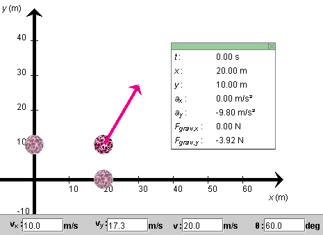
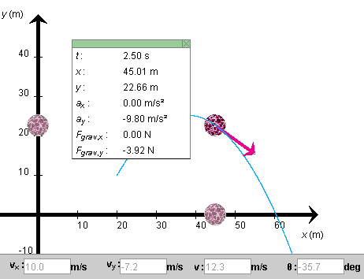
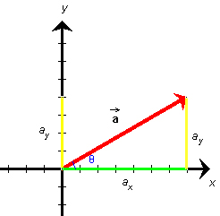

Prerequisites
Students should be familiar with the concepts of velocity and acceleration, at the vector level, and have a working knowledge of the kinematical equations for motion with constant acceleration in one and two dimensions.
Learning Outcomes
Students will learn that projectile motion without air resistance is a motion with constant acceleration. They will learn to apply to projectile motion the kinematical equations of motion with constant acceleration, in one and two dimensions. They will deepen their understanding of acceleration as the time-rate-of-change of velocity by examining the example of projectile motion.
Instructions
Students should know how the applet functions, as described in Help and ShowMe.
The applet should be open. The step-by-step instructions in the following text are to be done in the applet. You may need to toggle back and forth between instructions and applet if your screen space is limited.
 Appendix
Appendix
 Equations For Motion With Constant
Acceleration
Equations For Motion With Constant
Acceleration
RESET the applet.
Set the ball's initial position to (x,y) = (20.0, 10.0) m and its initial velocity to a magnitude of 20 m/s and to a direction that forms an angle q with the positive x-axis equal to 60o. The applet should be configured as shown in Figure 1 below.

Figure 1
Question 1. When you PLAY the motion, the ball will be moving without air resistance. What will be the ball's acceleration on the way up, right at the top, and on the way down?
Make a prediction, then press Play and observe. Display the acceleration (orange) by selecting the Vectors button and checking Acceleration in the Vector panel.
Answer. You should be able to observe that the acceleration vector remains constant throughout the motion, both in magnitude and direction. In particular, it is not zero at the peak of the motion.
Question 2. REWIND the applet, and change the direction of the ball's initial velocity so that it forms an angle q = 60o with the positive x-axis. Does the acceleration vector change as you enter this new initial velocity and does it vary during the subsequent motion?
Answer. You should find that the answer is NO on both counts.
Question 3. What happens to the acceleration when you change the launch angle to 90o? This will result in straight up-and-down motion.
Answer. You should be able to observe that again there is no change in the acceleration when the new initial velocity is entered and that the acceleration remains constant throughout the motion. In particular, the acceleration is not zero at the top, even though the velocity is equal to zero momentarily!
Acceleration is related to a change in velocity, and the velocity can be changing even at an instant when it is zero! Have a close look at the following question and its answer to understand this better.
Question 4. What is the value of the acceleration in all of these cases? Obtain an answer by observing the rate at which the velocity changes. Do this for an initial velocity of magnitude 20 m/s and direction angle of 60o.
Answer. For a finite time interval of duration Dt, the average acceleration during that time interval is defined as the ratio: change in velocity during the time interval divided by the duration of the time interval. Expressed symbolically,
 av =
(D
av =
(D )/Dt
)/Dt  (1)
(1)
or, in terms of x and y components,
ax,av = (Dvx)/Dt,  ay,av = (Dvy)/Dt .
ay,av = (Dvy)/Dt . (2)
(2)
For a review of components, see the section Components in the Appendix to this lesson.
Set the Time Step slider to a time step of 0.5 s, and STEP through the motion.
You will notice that the horizontal velocity component, vx = 10 m/s, is constant throughout the motion. The shadow ball on the horizontal axis moves with this constant velocity. Thus, the first one of Eqs.(2) implies that there is no horizontal acceleration, i.e., ax = 0.
However, there is vertical acceleration. The shadow ball on the vertical axis moves up and then down and does not move with constant velocity. We need to measure its acceleration.
As you STEP through the motion, record the times t elapsed from the start of the motion against the corresponding values of the y-component of the velocity and arrange your results in a table. You should find the values listed in the first two columns of Table 1 below.
Using Eq.(2) above, obtain values of the y-component of the average acceleration as follows. Take the differences in the vy-values (later value minus earlier value) and record them in a third column of your table. The vy-values are listed in Table 1 in between the individual time instants because they apply to the time intervals between two such times.
Finally, divide the (Dvy)-values by the time elapsed between two successive instants. This time elapsed is equal to the time step of 0.5 s. Record the results in a fourth column. These are the values of the y-component of the average acceleration. As you can see, the average acceleration in the y-direction is constant and has the value -9.8 m/s2. This is the acceleration of the shadow ball on the y-axis.
| t (s) | vy (m/s) | Dvy (m/s) | ay,av = (Dvy)/Dt (m/s2) |
| 0 | 17.3 | ||
| -4.9 | -9.8 | ||
| 0.5 | 12.4 | ||
| -4.9 | -9.8 | ||
| 1.0 | 7.5 | ||
| -4.9 | -9.8 | ||
| 1.5 | 2.6 | ||
| -4.9 | -9.8 | ||
| 2.0 | -2.3 | ||
| -4.9 | -9.8 | ||
| 2.5 | -7.2 | ||
Table 1
You could repeat these measurements for shorter and shorter time steps, at least mathematically. In the laboratory, there will be practical limitations to how short one can take the time intervals. If you wanted to use the applet for this, you would encounter numerical round-off errors when the step size becomes too small because the applet is not displaying sufficiently many decimals. However, mathematically you could keep on reducing the step size. You would find that ax,av = 0 and ay,av = -9.8 m/s2 at any step size. Therefore, the limit of the average acceleration as the step size goes to zero is equal to these values also. The limit is called the instantaneous acceleration, or just acceleration for short.
Final Result. The ball's acceleration is 0 in the x-direction and -9.8 m/s2 in the y-direction. Formally, using component notation, one writes this as follows:
ax = 0,  ay = -9.8 m/s2
ay = -9.8 m/s2
 (3)
(3)
This acceleration is called the acceleration due to gravity because it is caused by gravity alone. This is the acceleration close to the surface of the earth. Higher up, or perhaps on a different planet, the acceleration due to gravity has a different value. The applet lets you vary the magnitude g of the acceleration due to gravity by means of the g- slider.
Projectile motion can be described in terms of the motions of two shadow balls moving on the horizontal and vertical axes.
The projections of projectile motion onto the horizontal and vertical axes - imagine them performed by two shadow balls - are motions with constant velocity and constant acceleration, respectively. The acceleration of the shadow ball moving on the vertical axis is downward and, near the surface of the earth, has magnitude g = 9.8 m/s2.
Note. The term "projectile motion" applies to the motion of an object in a uniform gravitational field. Such a field exists to a very good approximation within a region of space extending a few kilometers horizontally and vertically from a given point on the earth's surface. Motions extending over a larger range, in which the earth's curvature and the decrease of the value of g with elevation become significant, are called "ballistic motions".
Exercise 1. Set g to a different value, measure the ball's acceleration as above, and compare what you find with the value of g set by the slider.
Question 5. When a ball is thrown straight up, what is the ball's acceleration at the peak of the ball's trajectory where the ball's velocity is momentarily equal to zero?.
Answer. The acceleration has the same value at the top as on the way up or on the way down, namely, ax = 0 and ay = - 9.8 m/s2. The acceleration is not zero.
Reason: Even though vy = 0 at this moment, Dvy taken over a short time interval containing this instant is not zero and when divided by the time duration Dt of this interval can give a finite result that has a non-zero limit as Dt approaches 0. Note that the ratio (Dvy)/Dt does not change (and does not go to 0!) when both the numerator and denominator are made smaller by the same factor.

Question 1. Given the same initial conditions as above,
(x(0), y(0)) = (20, 10) m, where will the ball be at t = 2.50 s, and what will be
its velocity at that time?
Answer. You can determine the answers "experimentally"
by setting the applet to the given initial conditions and then
stepping the motion forward to time t = 2.50 s. You should
see what is shown in Figure 2 below.
 Figure 2 To calculate the position and velocity is straightforward if
you have the kinematical equations for motion with constant
acceleration. They are listed in Table 2 in the Appendix "Equations For Motion With Constant
Acceleration". The equations are used in Eqs.(7), (8), (10),
and (12) below.
The equations are in terms of x and y components.
The initial position is already in this form, but the initial
velocity is in polar form and needs to be converted to component
form. The necessary transformation equations are described in the
section Components of the Appendix to
this lesson.
Here are the calculations.
vx(0) = v(0) cos q(0) = 20 cos 60o = 10.0 m/s vy(0) = v(0) sin q(0) = 20 sin 60o = 17.3 m/s Substituting these values and values (3) of the acceleration
components into the equations for the velocity and position
components and then setting t = 2.50 s, gives for the
velocity
vx(t) = vx(0) +
axt = 10 + 0 = 10 m/s vy(t) = vy(0) +
ayt = 17.3 - 9.8t whence
vy(2.5 s) = 17.3 - 9.8x2.5 =
-7.2 m/s . and for the position
x(t) =
x(0) + vx(0)t +
(ax/2)t2 = 20 + 10t +
0 whence
x(2.5 s) = 20 + 10x2.5 = 45.0 m and
y(t) =
x(0) + vy(0)t +
(ay/2)t2 = 10 + 17.3t -
(9.8/2)t2 whence
y(2.5 s) = 10 + 17.3x2.5 -
(9.8/2)x2.52 = 22.6 m The velocity and position values (7), (9), (11), and (13) agree
with the values displayed in Figure 2 within round-off error.
Exercise 1. REWIND the applet, and change the
x-component of the initial velocity from 10.0 m/s to 20.0
m/s, without changing the y-component of the initial
velocity. Use the applet to again determine the position and
velocity at t = 2.50 s.
You should be able to observe that the y-components of
the position and velocity at 2.50 s are unchanged. Thus, changes
in the motion in the x-direction do not affect the motion
in the y-direction. The two shadow balls move
independently of each other. You may want to test this further by
changing the initial y-component of the velocity and not
the x-component. The motion in the x-direction will
remain unchanged.
The independence of the horizontal and vertical components of
projectile motion without air resistance is apparent also from the
structure of the equations in Table 2. The equations for the
x-componnets do not contain any y-components, and
vice versa. This simplifies the mathematical aspects of
projectile motion a great deal. Instead of a complicated
two-dimensional problem, one is dealing with two separate
one-dimensional problems.
Exercise 2. REWIND the applet. Then set the ball to
the position values (11) and (13), which is the position occupied
in the motion in Question 1 at t = 2.50 s. Then set the
velocity values to the negative of the values it had in that
motion at t = 2.5 s, i.e., to the negative of values (7)
and (9), i.e., to vx = -10.0 m/s and
vy = 7.2 m/s. Then run the simulation while
keeping the trace displayed.
You should find that the ball retraces its earlier path
exactly. This is called motion reversibility or also
time reversibility, although it is not the time that is
reversed here.
>>>>> Appendix <<<<<
Figure 3 Axes and Components. In the following equations for the
motion of a particle with constant acceleration it is assumed that
an x,y coordinate system has been chosen and that the
particle has the same acceleration everywhere, with constant
x and y components ax and
ay.
Sign Changes. In the diagram in Figure 3 above, the
direction of the acceleration vector is such that both the x
and y components of the vector are positive. In another
situation, the direction of the vector may be different, so that one
or both of the x and y components may be negative.
(Or the direction of the vector may be as shown, but the directions
of the x and y axes may have been chosen differently,
again causing one or both components of the vector to be negative.)
The equations below apply to all such situations. No signs in these
equations need to be changed. 2D vs. 1D. The following equations are formulated for the
2D case, motion in two dimensions. However, they also apply to 1D
motion, motion along a straight line. In this case, it will often be
convenient to choose either the x or y axis to be along
the line of motion. Assuming the motion is along the x axis,
you will need only the equations for the x components. All
y components in any of the equations will be zero. Similarly,
if the motion is restricted to the y-axis, just use the
y equations and ignore the x equations. Acceleration, Velocity, and Position vs. Time: Table 2 Speed vs. Displacement: Dv2 =
v2(t) - v2(0) =
2axDx +
2ayDy For 1D motion, say, along the x axis, the speed
vs. displacement relation reduces to
Dv2 =
v2(t) - v2(0) =
2axDx =
2ax[x(t) - x(0)] . Vectors can be described in terms of their scalar components,
components for short. A vector in two dimensions has two
scalar components, one along the x-axis and one along the
y-axis. For a vector  Figure 4 The scalar components of a vector are the vector's
projections onto the x and y axes. In Figure 4, they
are shown in green and yellow, respectively. They are called scalar
components because they are numbers. The scalar components are equal
to the x and y coordinates of the tip of the vector if
the tail end of the vector is at the origin of the coordinate system,
as it is here.
The vector in Figure 4 has a magnitude of 8 and an angle q with the positive x-axis equal to
30o. Its scalar components have the values
ax = 6.93, For vectors in the first quadrant, both components are positive,
but for vectors in one of the other three quadrants one or both
components are negative. E.g., for a vector in the second quadrant,
the x-component is negative while the y-component is
still positive.
The definition of the sine and cosine imply that
ax = a cos q, Substituting a = 8.00 and q =
30.0o into these equations, gives the values listed in
Equations (17) and illustrated in Figure 4.
Note that Equations (18) are correct even if the vector Predicting the
Ball's Motion
 (v(0), q(0)) = (20 m/s, 60o),
(v(0), q(0)) = (20 m/s, 60o),  (4)
(4)
 (5)
(5)
 (6)
(6)
 (7)
(7)
 (8)
(8) (9)
(9) (10)
(10)
 (11)
(11)
 (12)
(12)
 (13)
(13)
 Equations
For Motion With Constant Acceleration
Equations
For Motion With Constant Acceleration

x components y components
Acceleration ax =
const ay = const
Velocity vx(t) =
vx(0) +
axt vy(t) =
vy(0) + ayt
Position x(t) = x(0) +
vx(0)t +
(ax/2)t2
y(t) = y(0) +
vy(0)t + (ay/2)
t2

 (14)
(14) (15)
(15) (16), these
components are denoted ax and ay,
respectively. Figure 4 below illustrates the components for a vector
that is in the first quadrant.
(16), these
components are denoted ax and ay,
respectively. Figure 4 below illustrates the components for a vector
that is in the first quadrant.
 ay = 4.00
ay = 4.00  (17)
(17)
 ay = a sin q.
ay = a sin q. (18)
is in the second, third or fourth
quadrant. No signs need to be changed. Any sign changes are
automatically taken care of by the signs of the cosine and sine
functions for values of q in any of these
other quadrants.
(18)
is in the second, third or fourth
quadrant. No signs need to be changed. Any sign changes are
automatically taken care of by the signs of the cosine and sine
functions for values of q in any of these
other quadrants.